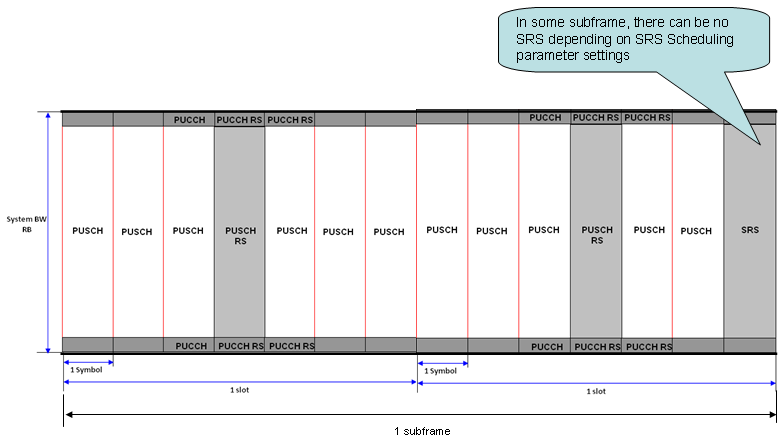
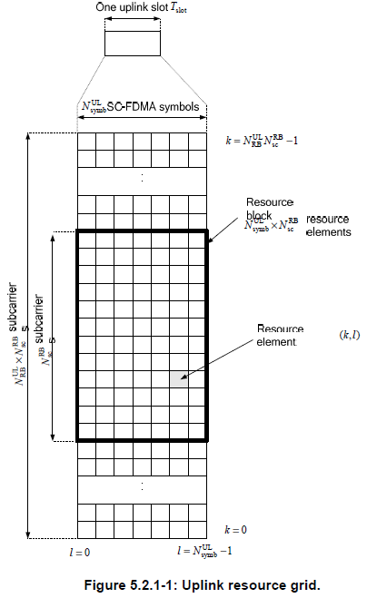
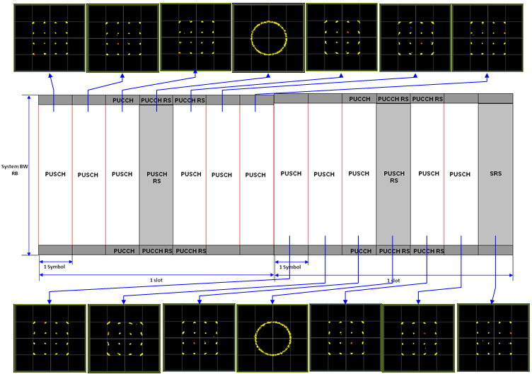

Frame Structure - Uplink Home : www.sharetechnote.com
The Uplink slot structure looks as follows. When I was first reading LTE materials, almost every books and article says "LTE use SC(Single Carrier) FDMA for uplink signal" and because of the word 'Single Carrier' made me so confused about creating any images of Uplink slot structure. Even now I don't think I can explain clearly about 'SC FDMA'. You may ask to FPGA or DSP engineer about the details of SC FDMA mechanism.
- Slot Structure
- PUCCH RS
- PUCCH
- PUSCH RS
- PUSCH
- SRS
- Uplink Resource Grid
- Channels in Communication
- Gallery
But anyway good thing to me was that the most important factors in uplink slot is same as the one in the downlink. Just take a look at the overall uplink slot structure.

As in downlink, Frame time and slot time in Uplink is the same as in the downlink. And the resource block structure is also same both in uplink and downlink. As shown above, 7 symbols in one slot is also the same in both uplink and downlink.
A little bit of differences you would notice would be the location of the each channel. Normally in downlink case, a channel tend to lie across the whole bandwidth but the channels in the uplink slot seems to be more localized. For example, PUCCH is located only at the lowest and highest end in frequency domain and reference signals also localized in time domain or both timedomain and frequency domain.
Carries the Reference Signal that is required for demodulating PUCCH. It means if this part is not properly configured or eNodeB failed to detect this part, eNodeB cannot decode PUCCH.
This channel can carries a lot of information (UCI), but depending on the configuration it can carry only a few of the following information.
- ACK/NACK for the recieved PDSCH data
- CQI
- RI
- PMI
As you see in the slot structure, PUCCH is located in the either extreme ends of the uplink frequency domain in alternating fashion between the two slots within a subframe, meaning that if the PUCCH is the lowest part of frequency domain in slot 0(first slot) and it will be located in the higest part of frequency domain in slot 1 (second slot). Exactly how many resource elements is allocated to the PUCCH is determined by network and the configuration is broadcasted to UE via SIB2.
For the details of PUCCH (Format, Location etc). Refer to the following sections in Quick Reference Page.
Carries the Reference Signal that is required for demodulating PUCCH. It means if this part is not properly configured or eNodeB failed to detect this part, eNodeB cannot decode PUCCH. This is always located at the center of Uplink slot.
Carries Uplink data that UE tries to send. and it can also carries ACK/NACK for the PDSCH the UE recieved in addition to uplink data.
SRS (Sounding Reference Signal)
Refer to SRS in Quick Reference
Getting into details, Uplink resource has also a kind of Grid format as shown below. Try to familiar with parameter name in this figure since this parameter will be used in all the other part of the specification. If you are not familiar with these parameter, you would not be able to visualize the contents when you are reading other parts of the specification.
As you see, the smallest unit is 'Resource Element(RE)' and the smallest resource allocation unit is RB(Resource Block) which spans 7 REs along time domain and 12 REs along frequency domain. It means one RB has 72 REs (6 x 12) in it.

Following diagram shows overall sequence of Uplink/Downlink data transmission. You would be able to associate the data transmission sequence diagram and the specific location of each channels in DL/UL frame structure.

